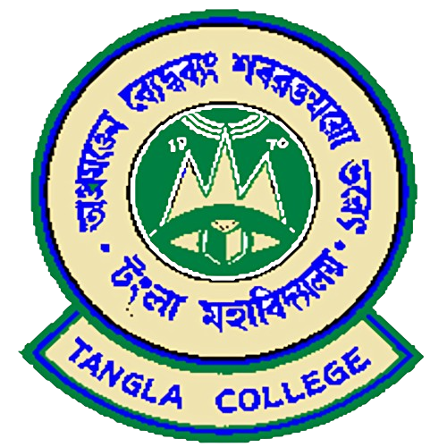
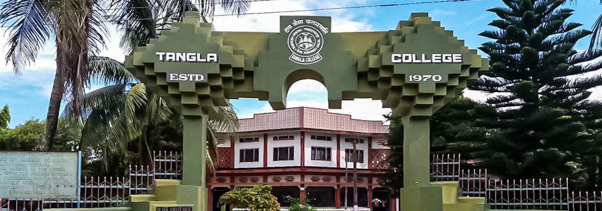
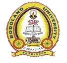
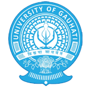
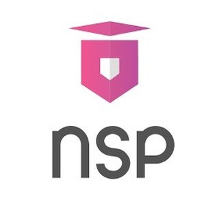
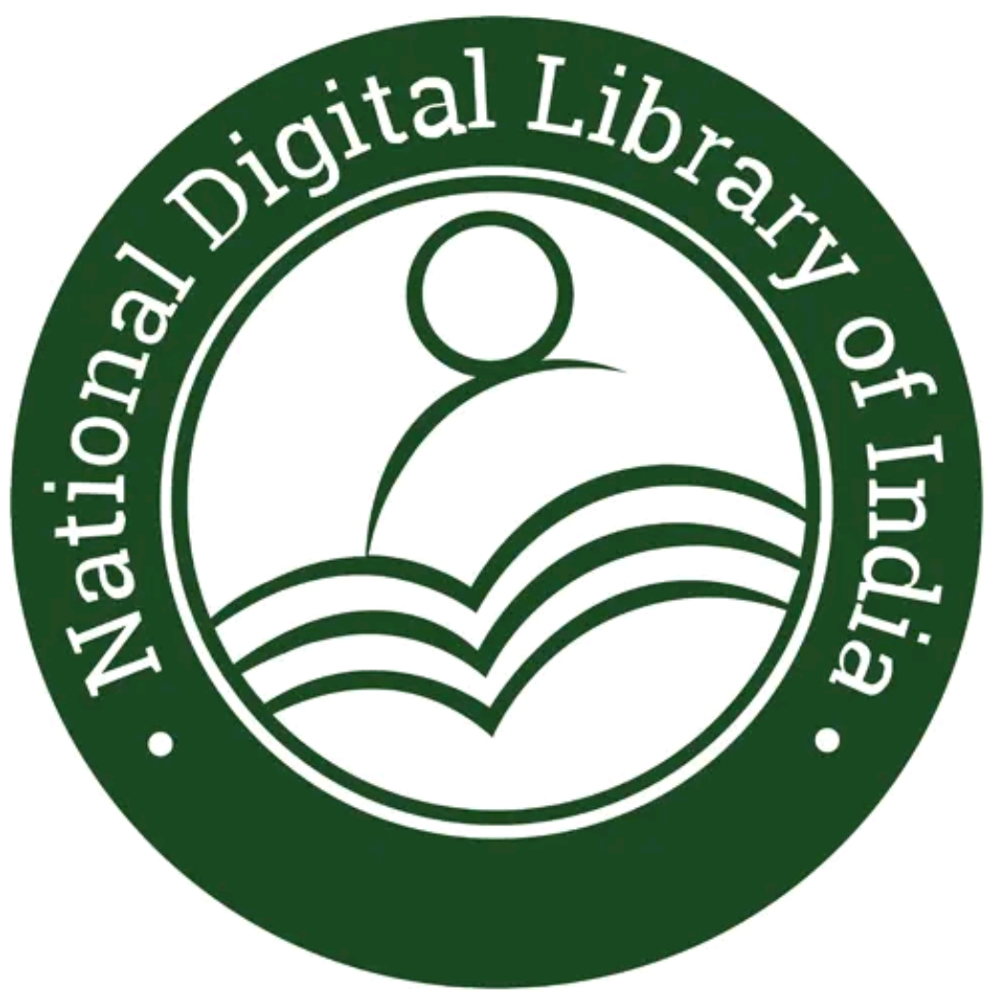

Affiliated to Bodoland University

Knowledge • Excellence • Success
Tangla College is a reputed institution dedicated to providing quality higher education and promoting academic excellence. The college offers a student-friendly learning environment with experienced faculty members, modern teaching methods, and various academic resources. Our goal is to help students develop knowledge, skills, and values that prepare them for successful careers and responsible citizenship. The college offers undergraduate courses in Bachelor of Computer Applications (BCA), Bachelor of Arts (BA), Bachelor of Commerce (B.Com), and Bachelor of Science (B.Sc). Along with academics, students are encouraged to participate in cultural activities, sports, seminars, and skill development programs. The institution focuses on both personal and professional growth, ensuring that students are well-prepared to meet future challenges. With a commitment to excellence, innovation, and discipline, Tangla College continues to inspire students to achieve their goals and contribute positively to society.
BCA (Bachelor of Computer Applications) BCA is a 4-year undergraduate program under the FYUGP structure designed to build strong foundations in computer science and information technology. The course includes programming languages, software development, database systems, web technologies, operating systems, and networking. With the additional fourth year, students get deeper practical exposure, project work, and skill-based training that improves industry readiness. In Assam and other regions, this program is highly relevant due to the growing IT sector. Graduates can work as software developers, web developers, system analysts, or IT support professionals, or pursue higher studies such as MCA or specialized IT certifications.
BA (Bachelor of Arts) BA is a 4-year undergraduate program under FYUGP that focuses on humanities and social sciences. Students can choose from a wide range of subjects such as English, History, Political Science, Sociology, Education, and Philosophy, depending on their interests. The FYUGP system allows more flexibility, interdisciplinary learning, and skill enhancement over four years. The program helps develop communication skills, critical thinking, and a deeper understanding of society and culture. In Assam, BA graduates often prepare for government services, teaching careers, journalism, and competitive examinations. The 4th year adds research exposure and advanced academic training.
B.Sc (Bachelor of Science) B.Sc is a 4-year undergraduate program under FYUGP that focuses on scientific learning and practical application. It includes subjects such as Physics, Chemistry, Mathematics, Botany, and Zoology depending on specialization. The extended 4-year structure gives students more laboratory experience, research projects, and skill-based learning. This helps in developing strong analytical and problem-solving abilities. In Assam, B.Sc graduates have opportunities in research institutions, healthcare, education, laboratory technology, and technical industries. It also provides a strong base for M.Sc, professional courses, and competitive exams.
B.Com (Bachelor of Commerce) B.Com is a 4-year undergraduate program under FYUGP focused on commerce, finance, accounting, taxation, and business studies. The course combines theoretical knowledge with practical training in financial systems, business management, and economic principles. The additional fourth year allows students to gain deeper specialization, internships, and project-based learning. In Assam, B.Com graduates are well-prepared for careers in banking, accounting firms, corporate sectors, and government finance departments. Many also pursue professional courses like CA, CMA, CS, or higher studies such as MBA.

BODOLAND UNIVERSITY

GAUHATI UNIVERSITY

SCHOLARSHIPS

DIGITAL LIBRARY
Address: Chamuapara , Tangla, Udalguri (BTAD), Assam, India
Phone: +919435780381
Email: contact@tanglacollege.com